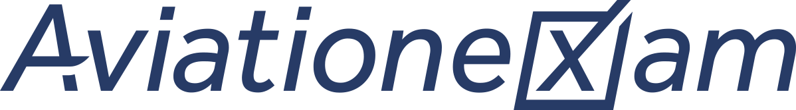

EASA ATPL(A) theory
Answer a few questions and get a sitting plan for the 13 subjects, with dates, hours a day and the 18-month clock. It follows the order in which subjects build on each other, keeps sittings in reserve, and ends with Flight Planning.
Step 1 of 2
The plan below updates as you go.
How much time can you give it?
How do you feel about calculations?
How much can you study?
When do you start studying?
Any subjects you already know well? Optional, up to 3
Each one you pick gets 30% less study time.
Step 2 of 2
The first two answers choose the plan. Hours, start date and strong subjects then set its timing.
Arrows mean "study this first". Flight Planning uses almost everything, so it goes last in every plan.
A 16-week template for a four-subject sitting. Stretch to 20 weeks around a job, compress to 12 full time. The shape stays the same.